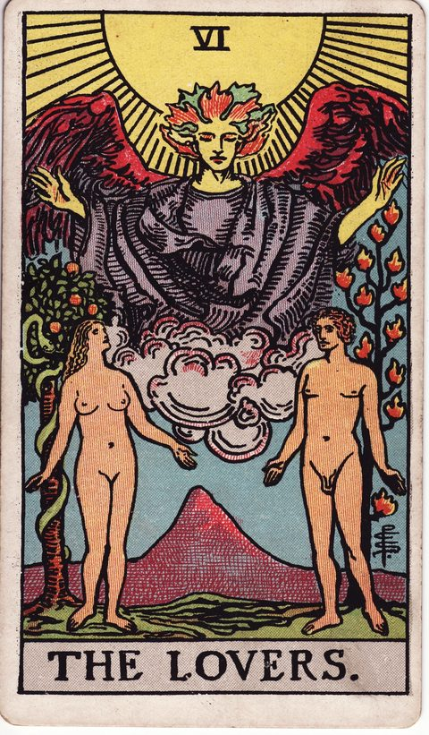
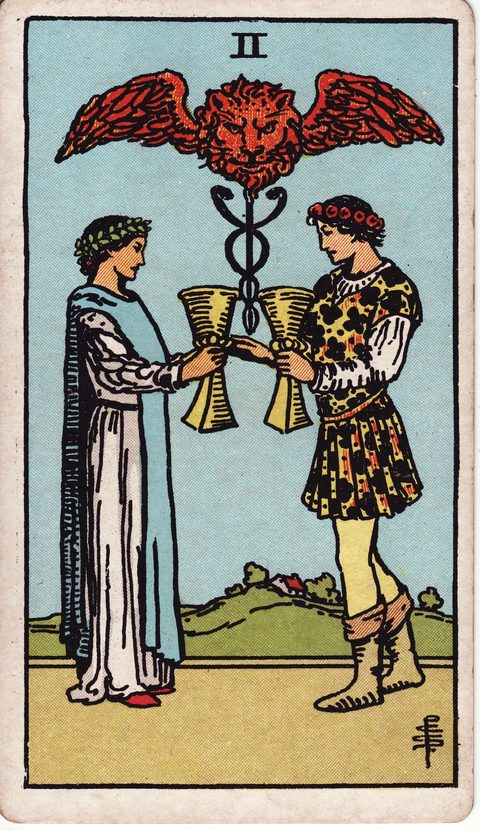
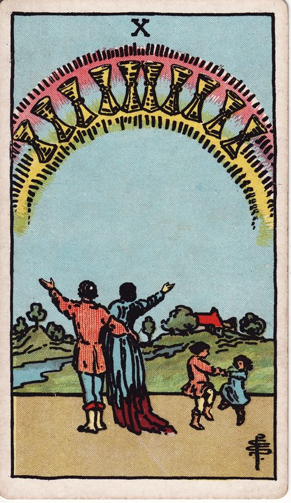
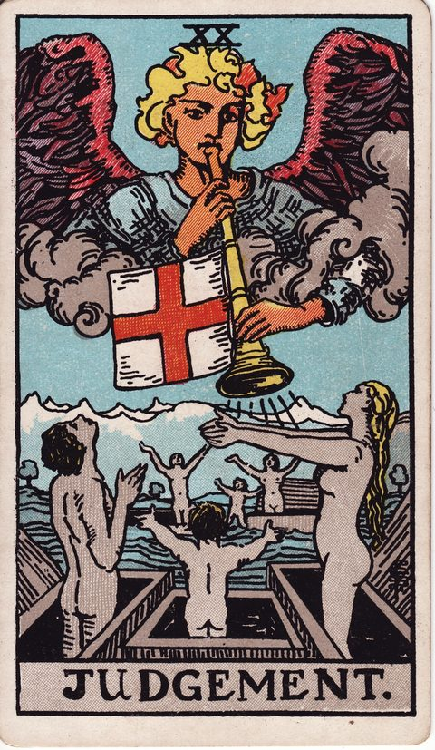
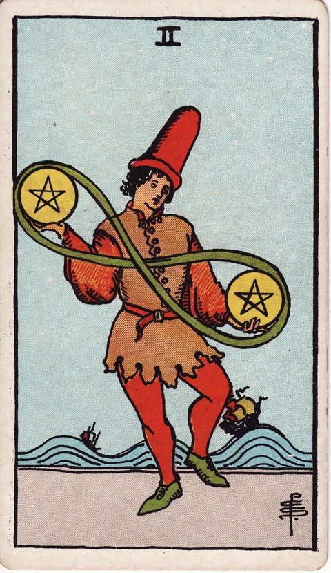

WORRY GUIDE — LOVE
結婚に踏み切れないとき
相手のことは大切に思っている。それでも結婚となると、なぜか一歩が踏み出せない。結婚は二人の関係だけでなく、家族、仕事、お金、住む場所まで含めた長い約束です。
迷いがあるのは、真剣に考えている証拠でもあります。このページでは、結婚の迷いを整理する視点と、その気持ちを映すタロットカードを紹介します。
POINT 01
迷いの正体
結婚の迷いには、「相手への迷い」と「結婚という形への迷い」が混ざっていることがよくあります。
相手には不満がないのに、自由がなくなる気がする、責任を背負う自信がない、という不安が先に立つこともあります。
逆に、結婚への憧れはあるのに、この人でいいのかという確信が持てない場合もあります。
年齢や周囲の結婚報告、家族からの期待が焦りを生み、自分の気持ちが見えにくくなることも少なくありません。
まずは、迷っているのが「誰と」なのか「結婚そのもの」なのかを分けて考えてみましょう。
POINT 02
整理の視点
整理のためには、日常の具体的な場面を想像してみることが役立ちます。お金の使い方、休日の過ごし方、家事の分担、仕事との両立、家族との距離感。
理想の生活像を言葉にして、相手のそれとどこが重なり、どこが違うのかを確かめてみましょう。違いがあること自体は問題ではなく、違いを話し合える関係かどうかが大切です。
また、周囲のペースではなく、自分たちのペースで決めてよいということも忘れないでください。
焦りから決めた結婚も、不安から先送りし続けることも、どちらも本音から離れた選択になりがちです。
POINT 03
カードの読み方
結婚の迷いでは、「選択」「結びつき」「家族」「決断」を表すカードが手がかりになります。
恋人は、心が惹かれる相手との結びつきと同時に、自分の価値観に沿って選ぶという意味を持つカードです。
カップの2は対等なパートナーシップを、カップの10は家族として築く満ち足りた暮らしを示します。審判は、心の呼びかけに応えて大きな決断をするタイミングを表します。
引いたカードが関係の深まりを示しているのか、まだ自分の中で整理が必要な段階を示しているのかを見比べてみてください。
POINT 04
自分への問いかけ
次の問いに、ゆっくり答えてみてください。結婚して手に入れたいものは何か、失うのが怖いものは何か。相手と意見が食い違ったとき、どのように話し合ってきたか。
十年後の自分たちの暮らしを、具体的に思い描けるか。結婚を迷う理由を相手に伝えたことはあるか。周囲の期待や年齢の焦りがなかったとしても、同じように迷うだろうか。
答えにくい問いほど、二人で話し合う価値があります。迷いを一人で抱え込まず、相手と共有することも、結婚を考えるうえで大切な一歩です。
CARDS
この悩みに関係するカード

恋人
心の結びつきと、自分の価値観に沿って選ぶことを表すカード。

カップの2
対等に支え合うパートナーシップの形を考える手がかり。

カップの10
家族として築く満ち足りた暮らしのイメージを映します。

審判
心の呼びかけに応えて、大きな決断をするタイミング。

ペンタクルの2
仕事・お金・生活のバランスを柔軟に取る姿勢を示します。
MORE WORRIES